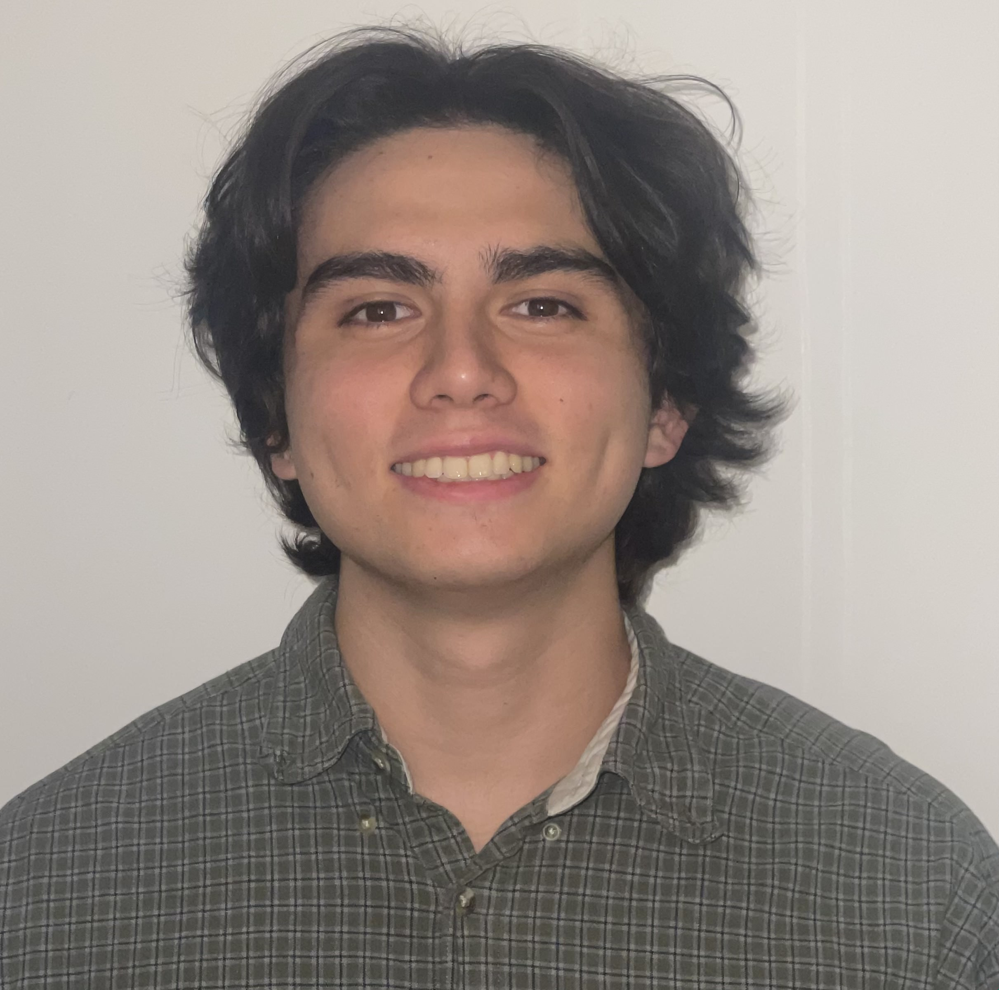

Computer Science Student | AI Researcher
Building AI-native soltuions to promote conservation efforts and conducting research on creative expression in LLMs.
Interested in NLP, LLMs, distributed architectures, and computer vision.
Outside of tech, I enjoy spearfishing and training/teching BJJ and Kickboxing at the Seattle University Martial Arts Associaton.
